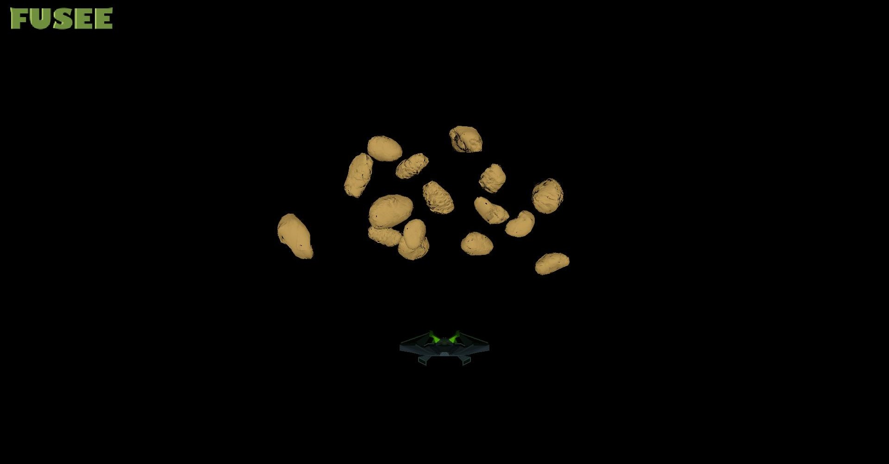

Starkiller
In this example a simple space shooter was programmed. It also uses a normal map so that the meteorite can be low poly but look like high poly.

On GitHub Starkiller Example
Controls
- Enter to start the game
- use WASD to dodge the metorites
- shoot with spacebar to destory meteorites
Normal Mapping
The normal maps were created using Blender by creating a highpoly model and a lowpoly one.Then the highpoly is baked onto the lowpoly and the details from the highpoly become a normal map for the lowpoly. FUSEE then recognizes this normal map and calculates the shadows for it.
Collision Detection
The collision is simply calculated via bounding boxes and position of the meterorites, projectiles or the ship. In the collision detection of the ship and meteorites, the AABB are calculated together with the transform matrix and checked if they intersect.
Loading in the metorites and projectiles
The creation of the metorites and the projectiles works like this: they are in the same Blender file as the Ship and then loaded into the scene in FUSEE and moved to the desired position.